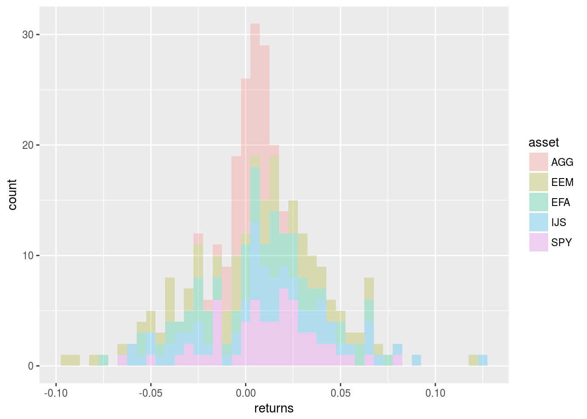
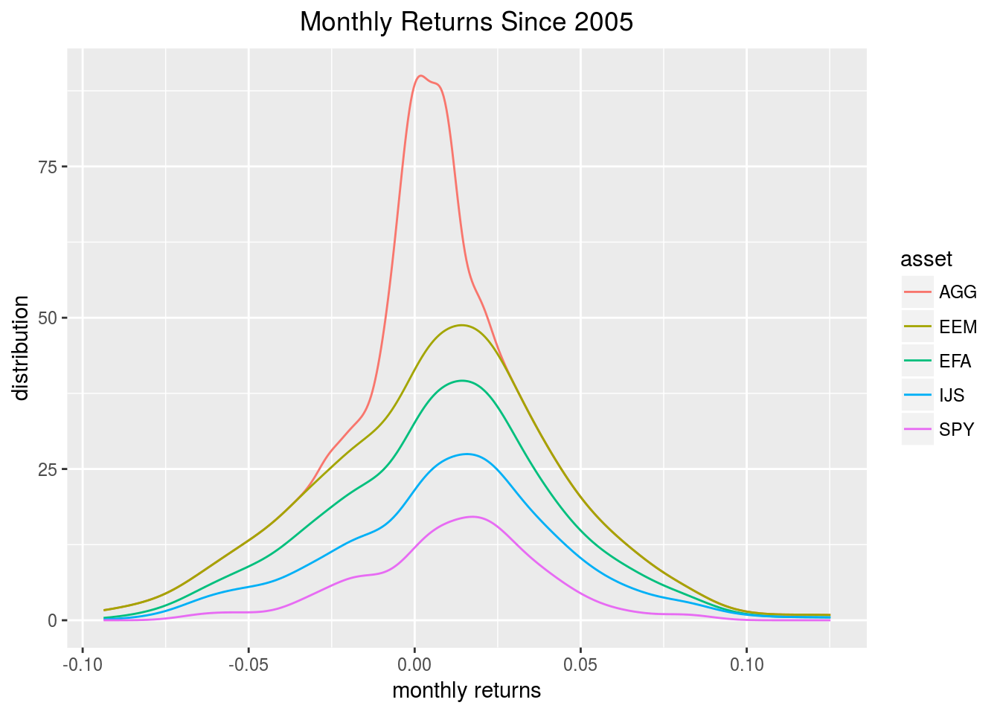
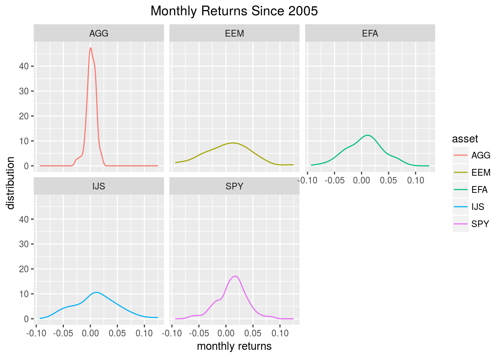
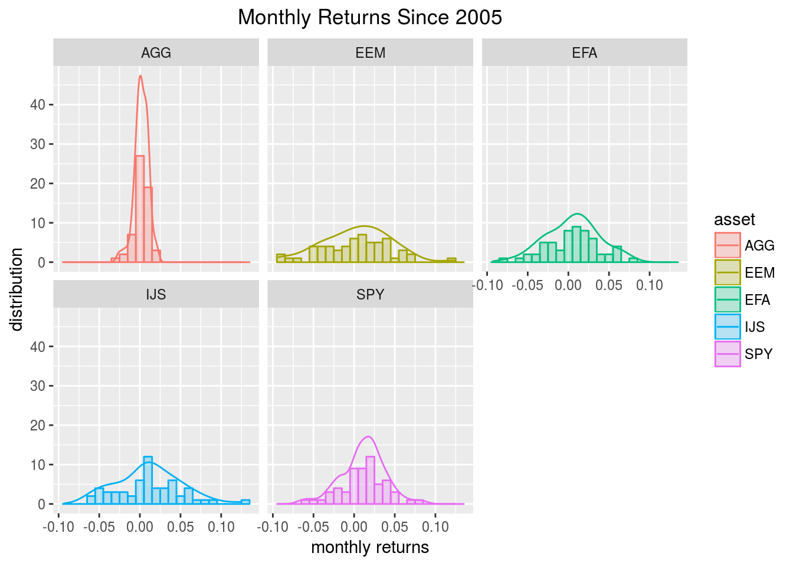

Chapter 1 Asset Prices to Returns
Importing Asset Prices
Let’s get to step 1 wherein we import adjusted price data for the 5 ETFs to be used in our porftolio and save them to an xts object called prices.
First, we need to choose ticker symbols and store them in a vector called symbols. We do that with symbols <- c("SPY","EFA", "IJS", "EEM","AGG"). Those are the tickers for the 5 assets in our portfolio. If you want to change to different assets for testing, change those tickers.
We will then pass symbols to Yahoo! Finance via the getSymbols() function from the quantmod package. This will return an object with the opening price, closing price, adjusted price, daily high, daily low and daily volume. We don’t want to work with all of those, though. The adjusted price is what we want.
Note that we are enforcing a starting date of “2013-01-01” and an end date of “2017-12-31”. That means we will be working with 5 years of data. If you wish to run this script or pull data that is up-to-date as of today, you can remove the argument to = "2017-12-31" - but then your raw data will be different from what is being used in this book. That’s fine, but the numbers will not match after that.
To isolate the adjusted price, we use the map() function from the purrr package and apply Ad(get(.)) to the imported prices. This will get() the adjusted price from each of our individual price series. If we wanted the closing price, we would run Cl(get(.)). That . refers to our initial object. Note that if you wish to choose different stock tickers, you change the tickers in the symbols vector.
We could stop here and have the right substance - daily prices for 5 tickers - but the format wouldn’t be great as we would have a list of 5 adjusted prices. Since those prices are xts objects, we would have a list of 5 xts objects. This is because the map() function returns a list by default.
The reduce(merge) function will allow us to merge the 5 lists into one xts object. The merge() function looks for the date index shared by our objects and uses that index.
Finally, we want intuitive column names and use colnames<- to rename the columns according to the symbols object. The rename() function from dplyr will not work here because the object structure is still xts. Note that since we pull the names from the symbols object, we can change this portfolio by changing the tickers in symbols.
symbols <- c("SPY","EFA", "IJS", "EEM","AGG")
prices <-
getSymbols(symbols, src = 'yahoo',
from = "2013-01-01",
to = "2017-12-31",
auto.assign = TRUE,
warnings = FALSE) %>%
map(~Ad(get(.))) %>%
reduce(merge) %>%
`colnames<-`(symbols)Note that we are sourcing data from Yahoo! finance with src = 'yahoo' because that source is publicly available as of the time of this writing. In industry, we almost certainly wouldn’t be pulling from the internet but instead would be accesssing an internal database. In that situation, anyone wishing to reproduce or reuse or build upon our work must be able to import or update our raw data. It’s a simple but oft overlooked first step that needs to be made clear. Where did the raw data come from and what code path was used to access it? Make sure it can be run in a clean R environment, meaning one in which the Global Environment has been cleared.
As to the starting date, I chose January 1, 2013 and the end date as December 31, 2017. Why? This book is being published in 2018 so we will be working with 5 years or 60 months of data and I like round numbers.
Maybe my colleagues think that’s cherry picking because that’s 5 years of solid bull market behavior, maybe my clients think I need to go back to before the financial crisis bubble and do some stress testing. They are entitled to to their opinions, and I to mine. The important thing is to make it easy for someone to test his/her own permutations. If a colleague looks at our work and wants to test a start date that goes back to the internet bubble, we need to enable that. And, indeed, a date change can be accomplished in the code above by changing from = "2013-01-01" to from = "some other date".
Back to the code, we now have an xts object of the adjusted prices for our 5 assets. Have a quick peek.
head(prices)## SPY EFA IJS EEM AGG
## 2013-01-02 132.1 49.93 77.39 40.67 98.66
## 2013-01-03 131.8 49.44 77.29 40.39 98.41
## 2013-01-04 132.4 49.69 77.89 40.47 98.52
## 2013-01-07 132.0 49.48 77.43 40.16 98.47
## 2013-01-08 131.7 49.20 77.14 39.80 98.56
## 2013-01-09 132.0 49.45 77.36 39.97 98.48If you are running this code in the RStudio IDE, there will now be an object called prices in your Global Environment.
Thoughts on Converting Daily Prices to Monthly Log Returns
Next we want to turn those daily prices into monthly returns. This seems like a rather innocuous step in our work, but it involves two important decisions to be highlighted in the name of reproducibility. First, we are changing time periods from daily to monthly and thus we are transforming our data. We need to explain how that’s happening. Are we going to use the first day of each month? The last day? Does it matter?
More importantly, we will be transforming our data from its raw form, adjusted prices, to a calculated form, log returns.
This is such a standard step that the temptation is to include a few lines of code and move on to the analysis, which is the stuff our team gets paid to do. But, converting to log returns is our first major data processing decision: why did we choose log returns instead of simple returns? It’s a standard practice to use log returns but it’s also a good chance to set the precedent amongst our team and within our workflow that we justify and explain decisions about our data, even decisions that are standard operating procedure in the financial world. If we have made the decision to work with log returns across our work, we should point to an document or a paragraph that explains the decision and the brief substantive justification.
In this case, I know that simulating returns is in our future in the Monte Carlo chapter, and we will be assuming a normal distribution of returns. Thus, I choose to convert to log returns. Plenty of people will disagree with making this transformation, then assuming a normal distribution, then simulating based on that assumption, and that’s fine.
Converting Daily Prices to Monthly Returns in the xts World
I mentioned in the introduction that we would be working in three universes - xts, tidyverse and tidyquant - the prices object is an xts, so we will start there..
The first observation in our prices object is January 2, 2013 (the first trading day of that year) and we have daily prices. We want to convert to those daily prices to monthly log returns based on the last reading of each month.
We will use to.monthly(prices, indexAt = "last", OHLC = FALSE) from the quantmod package. The argument index = "last" tells the function whether we want to index to the first day of the month or the last day. If we wanted to use the first day, we would change it to index = "first".
prices_monthly <- to.monthly(prices, indexAt = "last", OHLC = FALSE)
head(prices_monthly)## SPY EFA IJS EEM AGG
## 2013-01-31 135.4 51.00 79.35 39.77 98.16
## 2013-02-28 137.1 50.34 80.65 38.87 98.74
## 2013-03-28 142.4 51.00 83.96 38.47 98.84
## 2013-04-30 145.1 53.56 84.06 38.94 99.80
## 2013-05-31 148.5 51.94 87.67 37.06 97.80
## 2013-06-28 146.5 50.55 87.54 35.08 96.27We have moved from an xts object of daily prices to an xts object of monthly prices. Note that we now have one reading per month, for the last day of each month.
Now we call Return.calculate(prices_monthly, method = "log") to convert to returns and save as an object called assed_returns_xts. Note this will give us log returns by the method = "log" argument. We could have used method = "discrete" to get simple returns.
asset_returns_xts <- na.omit(Return.calculate(prices_monthly, method = "log"))
head(asset_returns_xts)## SPY EFA IJS EEM
## 2013-02-28 0.01268 -0.01297 0.016175 -0.02311
## 2013-03-28 0.03727 0.01297 0.040258 -0.01024
## 2013-04-30 0.01903 0.04897 0.001223 0.01208
## 2013-05-31 0.02334 -0.03066 0.041976 -0.04948
## 2013-06-28 -0.01343 -0.02714 -0.001403 -0.05473
## 2013-07-31 0.05039 0.05186 0.063542 0.01316
## AGG
## 2013-02-28 0.0058910
## 2013-03-28 0.0009849
## 2013-04-30 0.0096390
## 2013-05-31 -0.0202138
## 2013-06-28 -0.0157784
## 2013-07-31 0.0026879Take a quick look at the monthly returns above, to make sure things appear to be in order. Notice in particular the date of the first value. We imported prices starting “2013-01-02” yet our first monthly return is for “2013-02-28”. This is because we used the argument indexAt = "last" when we cast to a monthly periodicity (try changing to indexAt = "first" and see the result). That is not necessarily good or bad, but it might matter if that first month’s returns makes a difference in our analysis. More broadly, it’s a good time to note how our decisions in data transformation can affect the data that ultimately survive to our analytical stage. We just lost the first two months of daily prices.
From a subtantive perspective, we have accomplished our task: we have imported daily prices, trimmed to adjusted prices, moved to monthly prices and transformed to monthly log returns, all in the xts world.
Let’s do the same thing but with a different coding paradigm in the tidy world.
Converting Daily Prices to Monthly Returns in the Tidyverse
We now take the same raw data, which is the prices object we created upon data import and convert it to monthly returns using 3 alternative methods. We will make use of the dplyr, tidyquant, timetk and tibbletime packages.
There are lots of differences between the xts world and the tidy world but a very important one is the date. As noted above, xts objects have a date index. As we’ll see, data frames have a date column. We will see this difference in action soon but it’s good to keep in mind from the outset. Let’s get to it.
Our conversion of the prices object from xts to a data frame will start with the very useful tk_tbl() function from the timetk package.
In the piped workflow below, our first step is to use tk_tbl(preserve_index = TRUE, rename_index = "date") function to convert from xts to tibble. The two arguments will convert the xts date index to a date column, and rename it “date”. If we stopped here, we would have a new object in tibble format.
Next we turn to dplyr to gather() our new dataframe into long format and then group_by asset. We have not done any calculations yet, we have just shifted from wide format, to long, tidy format. Notice that when we gathered our data, we renamed one of the columns to returns even though the data are still prices. The next step will explain why we did that.
Next, we want to calculate log returns and add those returns to the data frame. We will use mutate and our own calculation to get log returns: mutate(returns = (log(returns) - log(lag(returns)))). Notice that I am putting our new log returns into the returns column by calling returns = .... This is going to remove the price data and replace it with log returns data. This is the explanation for why, when we called gather in the previous step, we renamed the column to returns. That allows us to simply replace that column with log return data instead of having to create a new column and then delete the price data column.
Our last two steps are to spread the data back to wide format, which makes it easier to compare to the xts object and easier to read, but is not a best practice in the tidyverse. We are going to look at this new object and compare to the xts object above, so we will stick with wide format for now.
Finally, we want to reorder the columns so that the date column is first.
asset_returns_dplyr_byhand <-
prices %>%
to.monthly(indexAt = "last", OHLC = FALSE) %>%
tk_tbl(preserve_index = TRUE, rename_index = "date") %>%
gather(asset, returns, -date) %>%
group_by(asset) %>%
mutate(returns = (log(returns) - log(lag(returns)))) %>%
spread(asset, returns) %>%
select(date, symbols)Have a quick peek at the new object.
head(asset_returns_dplyr_byhand)## # A tibble: 6 x 6
## date SPY EFA IJS EEM
## <date> <dbl> <dbl> <dbl> <dbl>
## 1 2013-01-31 NA NA NA NA
## 2 2013-02-28 0.0127 - 0.0130 0.0162 - 0.0231
## 3 2013-03-28 0.0373 0.0130 0.0403 - 0.0102
## 4 2013-04-30 0.0190 0.0490 0.00122 0.0121
## 5 2013-05-31 0.0233 - 0.0307 0.0420 - 0.0495
## 6 2013-06-28 - 0.0134 - 0.0271 - 0.00140 - 0.0547
## # ... with 1 more variable: AGG <dbl>Notice that our object now includes a reading for January 2013, whereas xts excluded it. Let’s make them consistent by removing that first row with the slice() function.
asset_returns_dplyr_byhand <- asset_returns_dplyr_byhand %>% slice(-1)
head(asset_returns_dplyr_byhand)## # A tibble: 6 x 6
## date SPY EFA IJS EEM AGG
## <date> <dbl> <dbl> <dbl> <dbl> <dbl>
## 1 2013-02-28 0.0127 -0.0130 0.0162 -0.0231 5.89e⁻³
## 2 2013-03-28 0.0373 0.0130 0.0403 -0.0102 9.85e⁻⁴
## 3 2013-04-30 0.0190 0.0490 0.00122 0.0121 9.64e⁻³
## 4 2013-05-31 0.0233 -0.0307 0.0420 -0.0495 -2.02e⁻²
## 5 2013-06-28 -0.0134 -0.0271 -0.00140 -0.0547 -1.58e⁻²
## 6 2013-07-31 0.0504 0.0519 0.0635 0.0132 2.69e⁻³Now our two objects are consistent and we have a data frame that we could use for further work.
Converting Daily Prices to Monthly Returns in the tidyquant World
Let’s explore a third pardigm where we’ll use the tq_transmute function from tidyquant. Instead of using to.monthly and mutate, and then supplying our own calculation, we use tq_transmute(mutate_fun = periodReturn, period = "monthly", type = "log") and go straight from daily prices to monthly log returns. Note that we select the period as ‘monthly’ in that function call, which means we can pass in the raw daily price xts object.
asset_returns_tq_builtin <-
prices %>%
tk_tbl(preserve_index = TRUE, rename_index = "date") %>%
gather(asset, prices, -date) %>%
group_by(asset) %>%
tq_transmute(mutate_fun = periodReturn, period = "monthly", type = "log") %>%
spread(asset, monthly.returns) %>%
select(date, symbols) %>%
slice(-1)
head(asset_returns_tq_builtin)## # A tibble: 6 x 6
## date SPY EFA IJS EEM AGG
## <date> <dbl> <dbl> <dbl> <dbl> <dbl>
## 1 2013-02-28 0.0127 -0.0130 0.0162 -0.0231 5.89e⁻³
## 2 2013-03-28 0.0373 0.0130 0.0403 -0.0102 9.85e⁻⁴
## 3 2013-04-30 0.0190 0.0490 0.00122 0.0121 9.64e⁻³
## 4 2013-05-31 0.0233 -0.0307 0.0420 -0.0495 -2.02e⁻²
## 5 2013-06-28 -0.0134 -0.0271 -0.00140 -0.0547 -1.58e⁻²
## 6 2013-07-31 0.0504 0.0519 0.0635 0.0132 2.69e⁻³Note that we had to again remove the first row with slice(-1).
Our second method in the tidyquant world will produce the same output as the previous two - a tibble of monthly log returns - but we will also introduce the tibbletime package Unlike the previous code chunk above where we went from daily prices straight to monthly returns, here we go from daily prices to monthly prices to monthly returns. That is, we will first create an xts of monthly prices, then a tibble, then a tibbletime object of monthly prices, then pipe to create monthly returns.
We don’t have a substantive reason for doing that here, but it could prove useful if there’s a time when we need to get monthly prices in isolation during a tidyverse-based piped workflow.
asset_returns_tbltime <-
prices %>%
to.monthly(indexAt = "lastof", OHLC = FALSE) %>%
tk_tbl(preserve_index = TRUE, rename_index = "date") %>%
tbl_time(index = "date") %>%
gather(asset, returns, -date) %>%
group_by(asset) %>%
tq_transmute(mutate_fun = periodReturn, type = "log") %>%
spread(asset, monthly.returns) %>%
select(date, symbols) %>%
slice(-1)Let’s take a peek at our 4 monthly log return objects.
head(asset_returns_xts)## SPY EFA IJS EEM
## 2013-02-28 0.01268 -0.01297 0.016175 -0.02311
## 2013-03-28 0.03727 0.01297 0.040258 -0.01024
## 2013-04-30 0.01903 0.04897 0.001223 0.01208
## 2013-05-31 0.02334 -0.03066 0.041976 -0.04948
## 2013-06-28 -0.01343 -0.02714 -0.001403 -0.05473
## 2013-07-31 0.05039 0.05186 0.063542 0.01316
## AGG
## 2013-02-28 0.0058910
## 2013-03-28 0.0009849
## 2013-04-30 0.0096390
## 2013-05-31 -0.0202138
## 2013-06-28 -0.0157784
## 2013-07-31 0.0026879head(asset_returns_dplyr_byhand)## # A tibble: 6 x 6
## date SPY EFA IJS EEM AGG
## <date> <dbl> <dbl> <dbl> <dbl> <dbl>
## 1 2013-02-28 0.0127 -0.0130 0.0162 -0.0231 5.89e⁻³
## 2 2013-03-28 0.0373 0.0130 0.0403 -0.0102 9.85e⁻⁴
## 3 2013-04-30 0.0190 0.0490 0.00122 0.0121 9.64e⁻³
## 4 2013-05-31 0.0233 -0.0307 0.0420 -0.0495 -2.02e⁻²
## 5 2013-06-28 -0.0134 -0.0271 -0.00140 -0.0547 -1.58e⁻²
## 6 2013-07-31 0.0504 0.0519 0.0635 0.0132 2.69e⁻³head(asset_returns_tq_builtin)## # A tibble: 6 x 6
## date SPY EFA IJS EEM AGG
## <date> <dbl> <dbl> <dbl> <dbl> <dbl>
## 1 2013-02-28 0.0127 -0.0130 0.0162 -0.0231 5.89e⁻³
## 2 2013-03-28 0.0373 0.0130 0.0403 -0.0102 9.85e⁻⁴
## 3 2013-04-30 0.0190 0.0490 0.00122 0.0121 9.64e⁻³
## 4 2013-05-31 0.0233 -0.0307 0.0420 -0.0495 -2.02e⁻²
## 5 2013-06-28 -0.0134 -0.0271 -0.00140 -0.0547 -1.58e⁻²
## 6 2013-07-31 0.0504 0.0519 0.0635 0.0132 2.69e⁻³head(asset_returns_tbltime)## # A tibble: 6 x 6
## date SPY EFA IJS EEM AGG
## <date> <dbl> <dbl> <dbl> <dbl> <dbl>
## 1 2013-02-28 0.0127 -0.0130 0.0162 -0.0231 5.89e⁻³
## 2 2013-03-31 0.0373 0.0130 0.0403 -0.0102 9.85e⁻⁴
## 3 2013-04-30 0.0190 0.0490 0.00122 0.0121 9.64e⁻³
## 4 2013-05-31 0.0233 -0.0307 0.0420 -0.0495 -2.02e⁻²
## 5 2013-06-30 -0.0134 -0.0271 -0.00140 -0.0547 -1.58e⁻²
## 6 2013-07-31 0.0504 0.0519 0.0635 0.0132 2.69e⁻³Do we notice anything of interest?
First, have a look at the left most column/date in each object, where the date is stored. The asset_returns_xts has a date index, not a column. That index doesn’t have a name. It is accessed via index(asset_returns_xts). The data frame objects have a column called “date”, accessed via the $date convention, e.g. asset_returns_dplyr_byhand$date.
Second, each of these objects is in “wide” format, which in this case means there is a column for each of our assets: SPY has a column, EFA has a column, IJS has a column, EEM has a colum, AGG has a column.
This is the format that xts likes and it’s the format that is easier to read as a human. However, the tidyverse wants this data to be in long or tidy format so that each variable has its own column.
For our asset_returns objects, that would mean a column called “date”, a column called “asset” and a column called “returns”. To see that in action, here is how it looks.
asset_returns_long <-
asset_returns_dplyr_byhand %>%
gather(asset, returns, -date)
head(asset_returns_long)## # A tibble: 6 x 3
## date asset returns
## <date> <chr> <dbl>
## 1 2013-02-28 SPY 0.0127
## 2 2013-03-28 SPY 0.0373
## 3 2013-04-30 SPY 0.0190
## 4 2013-05-31 SPY 0.0233
## 5 2013-06-28 SPY -0.0134
## 6 2013-07-31 SPY 0.0504asset_returns_long has 3 columns, one for each variable: date, asset, return As I said, this format is harder to read as a human - we can see only the first several reading for one asset. From a tidyverse perspective, this is considered ‘tidy’ data or long data and it’s the preferred format. When we get to visualizing and manipulating this data, it will be clearer as to why the tidyverse likes this format.
For now, spend a few minutes looking at the xts object asset_returns_xts and our various data frames, then look at the long, tidy object asset_returns_long object. Make sure that logic of how we got from daily prices to log returns for each object makes sense.
A Word on workflow and recap
Let’s recap what we’ve done thus far. We have imported raw price data for 5 assets, in a reprudicible and flexible way. We have used 4 different methods for converting those daily prices to monthly, log returns. From those 4 methods, we now have 5 objects: asset_returns_xts (an xts object), asset_returns_dplyr_byhand, asset_returns_tq_builtin, asset_returns_tbltime and asset_returns_long (a data frame in long instead of wide format).
We can think of our work thus far in terms of a wholistic data science workflow, that begins with data import and transformation. Data import and transformation is not the most exciting of work but it needs to be so crystal clear that our colleagues find it stunningly easy to follow the origin of our data. If we wish for our work to lay the ground work for several potential projects or test strategies that will increase in complexity, this first step needs to be clear and accessible.
There’s a high likelihood that we will encounter work from other team members who have their own methods for data import and transformation. The more methods we can master or at least practice, the better prepared we will be to reuse or expand on our colleagues’ work.
Data import and transofrmation is straightforward, but it also forces us to engage with our data in its rawest form, instead of skipping ahead to the model and the R squared. A data scientist can never spend too much time getting to know his/her data. Perhaps new insights will jump out, or an error will be found, or a new hypothesis. Furthermore, when it comes time to defend or update our findings or conclusions, deep knowledge of the raw data is crucial.
Visualizing Asset Returns before they get mashed into a portfolio
We could jump straight into the process of converting these assets into a portfolio, but it’s good practice to look at the individual charts before doing so. Once a portfolio is built, we’re unlikely to back track to visualizing returns on an individual basis. Yet, those individual returns are the building blocks and raw material of our portfolio. Visualizing their returns adds another chance to get to know our raw data.
For the purposes of visualizing returns, we will work with two of our monthly log returns objects, asset_returns_xts and asset_returns_long (the tidy, long formatted data frame)
First, we ill use the highcharter package to visualize the xts formatted returns.
highcharter is an R package but Highcharts is a javascript library - the R package is a hook into the javascript library. Highcharts is fantast for visualizing time series and it comes with great built-in widgets for viewing different time frames. I highly recommend it for visualizing financial time series but you do need to buy a license to use it in a commercial setting.
Not only are the visualizations nice, but it “just works” with xts objects in the sense that it reads the index as dates withouth needing to be told. We pass in an xts object and let the package do the rest. With that, let’s get to it.
First, we set highchart(type = "stock") to get a nice line format which was purpose built for stocks.
Then we add each of our series to the highcharter code flow with hc_add_series(asset_returns_xts[, symbols[1]], name = symbols[1]). Notice that we can use our original symbols object to reference the columns. This will allow the code to run should we change to different ticker symbols at the outset.
highchart(type = "stock") %>%
hc_title(text = "Monthly Log Returns") %>%
hc_add_series(asset_returns_xts[, symbols[1]],
name = symbols[1]) %>%
hc_add_series(asset_returns_xts[, symbols[2]],
name = symbols[2]) %>%
hc_add_series(asset_returns_xts[, symbols[3]],
name = symbols[3]) %>%
hc_add_series(asset_returns_xts[, symbols[4]],
name = symbols[4]) %>%
hc_add_series(asset_returns_xts[, symbols[5]],
name = symbols[5]) %>%
hc_add_theme(hc_theme_flat()) %>%
hc_navigator(enabled = FALSE) %>%
hc_scrollbar(enabled = FALSE)Take a look at the chart. It has a line for the monthly log returns of each our ETFs (and in my opinion it’s starting to get crowded). Do any months jump out at us? EEM looks to have suffered at the beginning of 2014
Highcharter also has the capacity for histogram making. One method is to first call the base function hist on the data along with the arguments for breaks and plot = FALSE. Then we can call hchart on that object.
hc_hist <- hist(asset_returns_xts[, symbols[1]], breaks = 50, plot = FALSE)
hchart(hc_hist) %>%
hc_title(text = paste(symbols[1], "Log Returns Distribution", sep = " "))That’s a nice histogram but highcharter doesn’t have a smooth way to create 5 histograms as we need to do.
Luckily, we can use ggplot() to operate on our tidy data frame assets_returns_long.
We call ggplot(aes(x = returns, fill = asset)) + geom_histogram(alpha = 0.25, binwidth = .005) and because the data frame is grouped by the ‘asset’ column, ggplot() knows to chart a separate histogram for each asset. ggplot() will automatically include a legend since we included fill = asset in the aes() call.
theme_update(plot.title = element_text(hjust = 0.5))
asset_returns_long %>%
ggplot(aes(x = returns, fill = asset)) +
geom_histogram(alpha = 0.25, binwidth = .005) That looks nice, but it would be convenient to separate by asset. Let’s use facet_wrap(~asset) to break into 5 separate chars and add a title with ggtitle.
asset_returns_long %>%
ggplot(aes(x = returns, fill = asset)) +
geom_histogram(alpha = 0.25, binwidth = .01) +
facet_wrap(~asset) +
ggtitle("Monthly Returns Since 2013")
Maybe we prefer to use a density line to visualize the various distributions. We can use the stat_density(geom = "line", alpha = 1) function to do this. The alpha argument is selecting a line thickness. Let’s also add a label to the x and y axis with the xlab and ylab functions.
asset_returns_long %>%
ggplot(aes(x = returns, colour = asset, fill = asset)) +
stat_density(geom = "line", alpha = 1) +
ggtitle("Monthly Returns Since 2005") +
xlab("monthly returns") +
ylab("distribution") 
That chart is quite digestible, but we can also facet_wrap(~asset) to break the densities out into individual charts.
asset_returns_long %>%
ggplot(aes(x = returns, colour = asset, fill = asset)) +
stat_density(geom = "line", alpha = 1) +
facet_wrap(~asset) +
ggtitle("Monthly Returns Since 2005") +
xlab("monthly returns") +
ylab("distribution") 
Okay, we have made histograms and density plots. Perhaps we would like to combine both of those into one chart. ggplot() works in aesthetic layers, which means we can chart a historgram in one layer, and then add a layer with a density chart.
asset_returns_long %>%
ggplot(aes(x = returns, colour = asset, fill = asset)) +
stat_density(geom = "line", alpha = 1) +
geom_histogram(alpha = 0.25, binwidth = .01) +
facet_wrap(~asset) +
ggtitle("Monthly Returns Since 2005") +
xlab("monthly returns") +
ylab("distribution")
We now have one chart, with histograms and line densities broken out for each of our assets. This would scale nicely if we had more assets and wanted to peek at more distributions of returns.